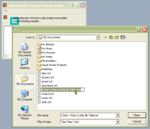

Common Dialog Full Featured (57K)
Common Dialog Full Featured (57K)
 Common Dialog Minimum Code (24K)
Common Dialog Minimum Code (24K)
 21 Mar 2000
21 Mar 2000
First Posted

Two code only solutions for displaying Common/Dialogs
Reuse the CommonDialog/Direct code directly in your application and ditch dependencies
The Common Dialog/Direct component provides you with a more functional version of the Common Dialog control which also means you no longer need a form to create Common Dialogs. These samples show how you can go one further with your app and remove the need to ship any DLLs at all!
The Harder They Come
There are two ways to do this: the "minimum code" way and the "full compatibility" version. The minimum code solution means you just need one class in your application: you loose the ability to use Hooks to centre and customise dialogs and you get a simplified interface to work with. The full compatibility version, on the other hand, means you need to add three classes and one module to your application, but it provides 100% of the functions provided by the CommonDialog/Direct DLL.
I'll cover these in turn.
The Minimum Code Way
In this version code is combined from various parts of the CommonDialog/Direct DLL and the support for Hooks and Templates removed. The result is a single class cCommonDialog.bas which offers the following functions:
- VBGetOpenFileName
- VBGetSaveFileName
- VBChooseColor
- VBChooseFont
- VBPrintDlg
- VBPageSetupDlg
These functions are equivalent to the Show.. methods of the Common Dialog but with all the properties supplied as parameters rather than being individually set through properties.
The Minimum Code Single Exe Demonstration project demonstrates opening and saving a document using this method.
The Full Compatibility Way
This method simply involves copying all the code from the CommonDialog/Direct library into a project, and ignoring any error messages from VB ("Class xxx cannot be public in this type of project, type changed to private"). The Full Function Single Exe Demonstration above shows a sample which uses a hook to centre a File Open Dialog box.